Современная архитектура
От знаменитых небоскрёбов Дубая до величественной мечети шейха Зайда — ОАЭ впечатляют сочетанием инновационной архитектуры и масштабных проектов, известных во всём мире.
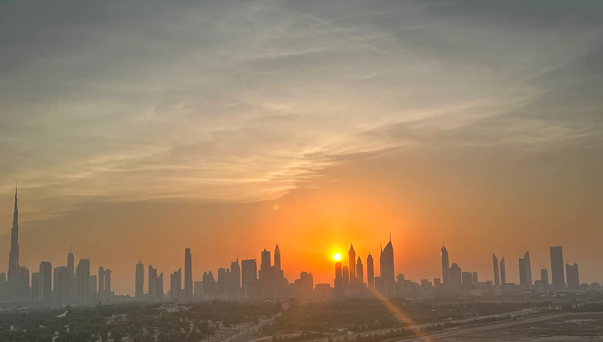
ОАЭ
Современные города, белоснежные пляжи, роскошные отели и высокий уровень сервиса делают ОАЭ одним из самых популярных направлений для отдыха. Здесь легко совместить пляжный релакс, яркие впечатления, развлечения мирового уровня и безупречный комфорт.
Подобрать турОсобенности направления
От знаменитых небоскрёбов Дубая до величественной мечети шейха Зайда — ОАЭ впечатляют сочетанием инновационной архитектуры и масштабных проектов, известных во всём мире.
Мягкий белый песок, тёплые воды Персидского и Оманского заливов, благоустроенные пляжи и комфортные условия делают отдых у моря приятным в любое время года.
ОАЭ предлагают огромный выбор современных курортов — от уютных семейных гостиниц до легендарных пятизвёздочных комплексов с безупречным сервисом.
Крупнейшие торговые центры, мировые бренды, дизайнерские бутики и традиционные рынки делают страну одним из лучших направлений для покупок.
Рестораны с кухнями со всего мира, авторские проекты известных шеф-поваров и высокий уровень сервиса подарят яркие гастрономические впечатления.
Тематические парки, аквапарки, сафари по пустыне, морские прогулки и множество развлечений для взрослых и детей делают отдых насыщенным и разнообразным.
ЭМИРАТЫ ОАЭ
В ОАЭ важно выбрать не только отель, но и сам эмират: от этого зависят атмосфера отдыха, пляжи, развлечения, расположение и общий ритм путешествия.
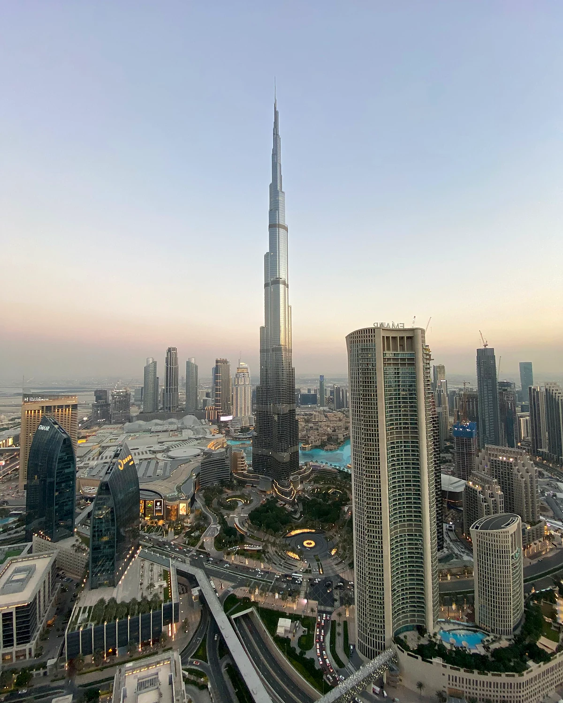
Дубай — самый динамичный эмират страны, где пляжный отдых сочетается с современной архитектурой, ресторанами, шопингом и развлечениями мирового уровня. Здесь представлен огромный выбор городских и пляжных отелей — от удобных семейных комплексов до знаковых премиальных курортов.
Дубай подходит туристам, которые хотят совместить море с насыщенной программой. За одну поездку можно отдыхать на пляже, посещать тематические парки, гулять по современным районам, ужинать в известных ресторанах и отправляться на экскурсии по городу и пустыне.
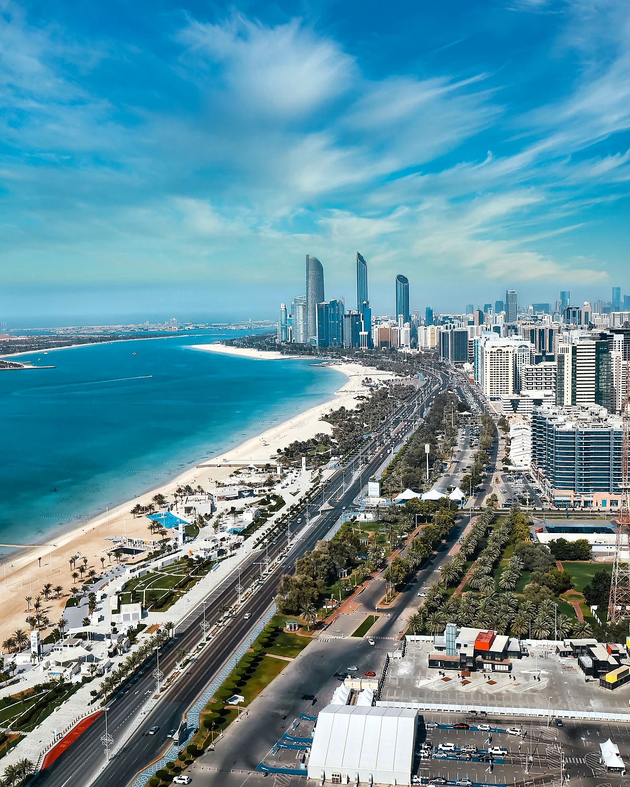
Абу-Даби — элегантная столица ОАЭ с просторными пляжами, современной культурной средой и курортами высокого уровня. Атмосфера здесь спокойнее, чем в Дубае, а городская архитектура, музеи и ухоженные набережные создают ощущение размеренного премиального отдыха.
Эмират хорошо подходит парам, семьям и туристам, которые ценят высокий сервис без излишней суеты. Пляжный отдых можно совместить с посещением мечети шейха Зайда, Лувра Абу-Даби и развлекательных парков острова Яс.
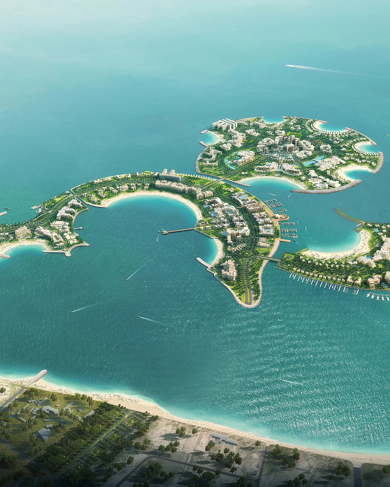
Рас-эль-Хайма известна протяжёнными пляжами, крупными курортными комплексами и более спокойной атмосферой. Многие отели располагают большой территорией, бассейнами, детской инфраструктурой и привычными для семейного отдыха концепциями питания.
Это один из наиболее удобных вариантов для туристов, которые хотят проводить основную часть отпуска на территории отеля. Помимо пляжей, эмират привлекает природными пейзажами и близостью к горам Хаджар, где доступны прогулки и активные развлечения.
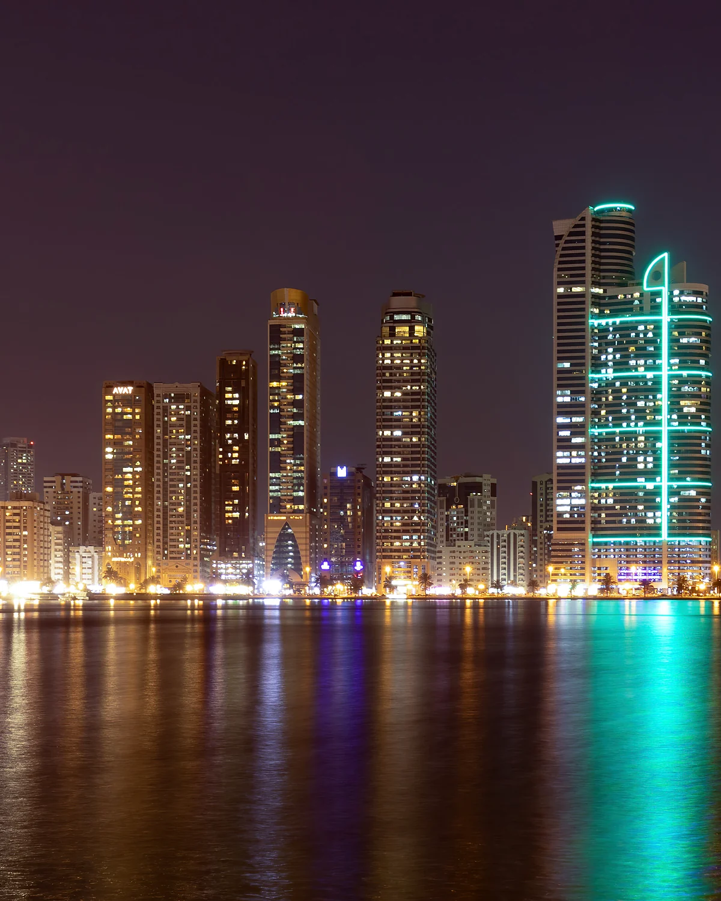
Шарджа предлагает более спокойный и сдержанный формат отдыха рядом с Дубаем. Здесь есть городские и пляжные отели, протяжённые набережные, культурные достопримечательности и удобные варианты размещения для семей.
Эмират подойдёт туристам, которым важны пляж, спокойная атмосфера и возможность периодически выезжать в Дубай. При выборе отеля необходимо учитывать его расположение и дорожную ситуацию, поскольку время поездки до соседнего эмирата зависит от района и часов движения.
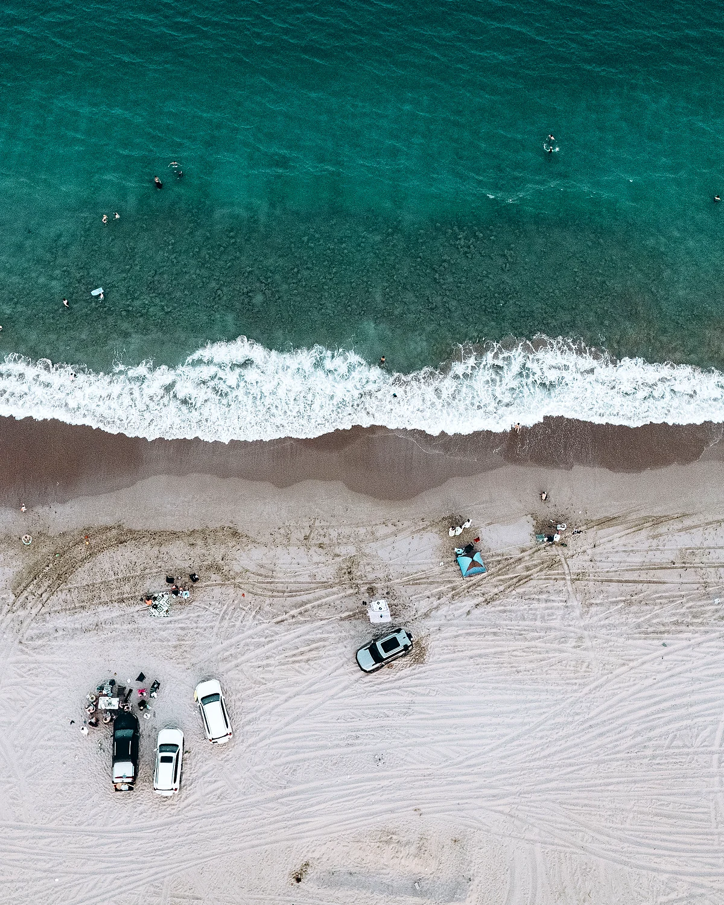
Фуджейра расположена на побережье Индийского океана и заметно отличается от городских эмиратов. Здесь горы подходят близко к морю, а курортные отели окружены природными пейзажами и создают более уединённую атмосферу.
Направление подходит для спокойного пляжного отдыха, поездок вдвоём и семейного отпуска вдали от городского ритма. Фуджейру часто выбирают ради моря, расслабленной обстановки, красивого побережья и возможности заняться снорклингом или дайвингом.
СЕЗОННОСТЬ
В ОАЭ можно отдыхать круглый год, однако впечатления от поездки будут разными в зависимости от сезона. Одни месяцы идеально подходят для пляжного отдыха и экскурсий, другие — для более спокойной атмосферы и привлекательных цен.
Наиболее комфортными периодами считаются осень, зима и начало весны. С октября по апрель температура подходит для прогулок, экскурсий и отдыха у моря, а декабрь, январь и февраль особенно удобны для семейных поездок и насыщенной городской программы.
С мая по сентябрь в Эмиратах становится очень жарко, поэтому большую часть дня путешественники проводят в отелях, у бассейнов, в торговых центрах и аквапарках. Летний период подходит тем, кто хорошо переносит высокую температуру и хочет воспользоваться более привлекательными предложениями на размещение.
ВПЕЧАТЛЕНИЯ
ОАЭ предлагают гораздо больше, чем пляжный отдых. За одну поездку можно увидеть футуристические города, отправиться в пустыню, посетить известные парки развлечений и познакомиться с современной культурой страны.
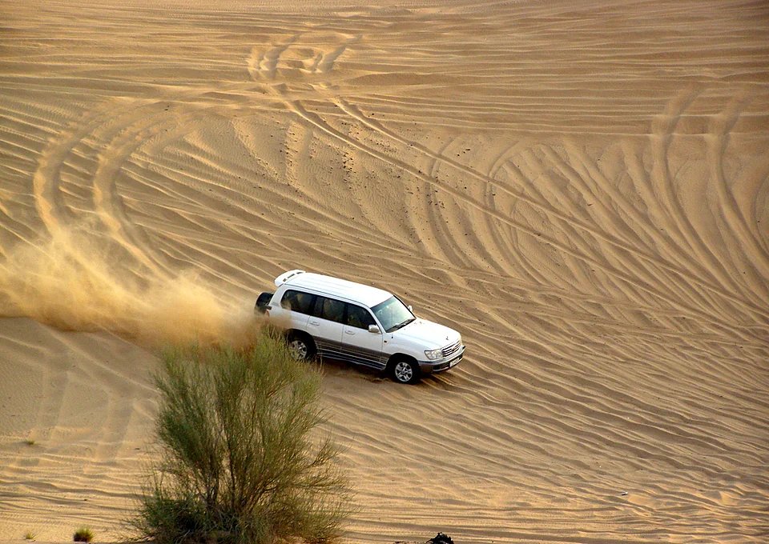
Пустыня
Поездка по песчаным дюнам позволяет увидеть ОАЭ за пределами современных городов. В программу часто входят остановка на закате, ужин в пустыне и знакомство с традиционной атмосферой региона.
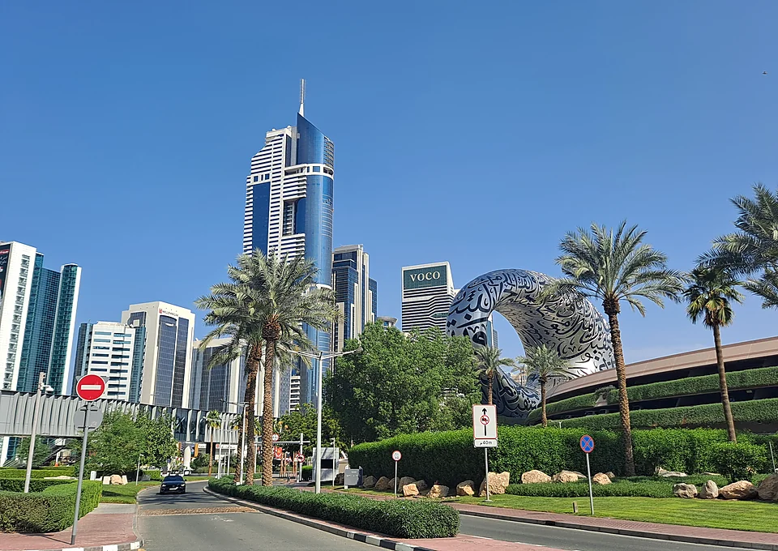
Архитектура
Небоскрёбы, острова, набережные и футуристические районы стали одной из главных визитных карточек страны. Особенно впечатляюще город выглядит вечером, когда включается подсветка.
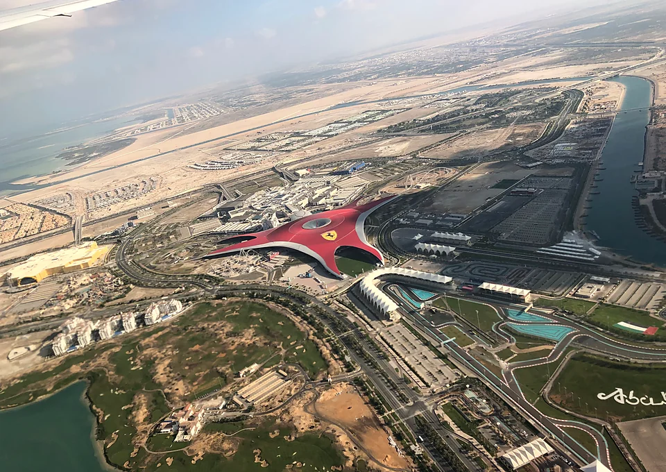
Семейный отдых
В ОАЭ работают крупные тематические и водные парки для детей и взрослых. Их легко включить в семейный маршрут, особенно во время отдыха в Дубае или Абу-Даби.
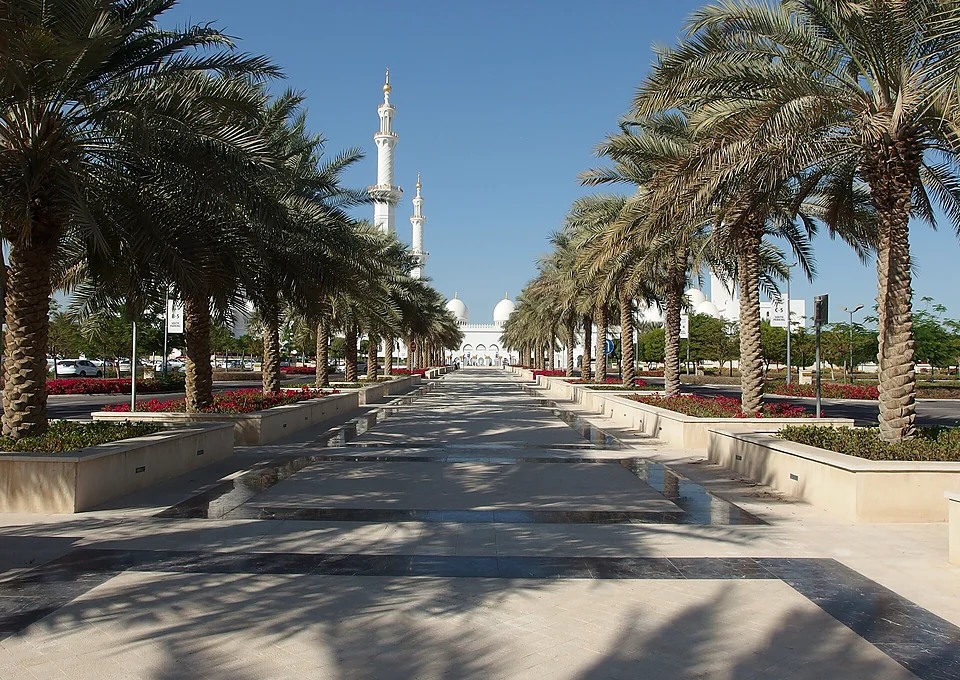
Культура
Мечеть шейха Зайда, Лувр Абу-Даби и современные культурные пространства позволяют увидеть другую сторону страны — спокойную, архитектурную и более традиционную.
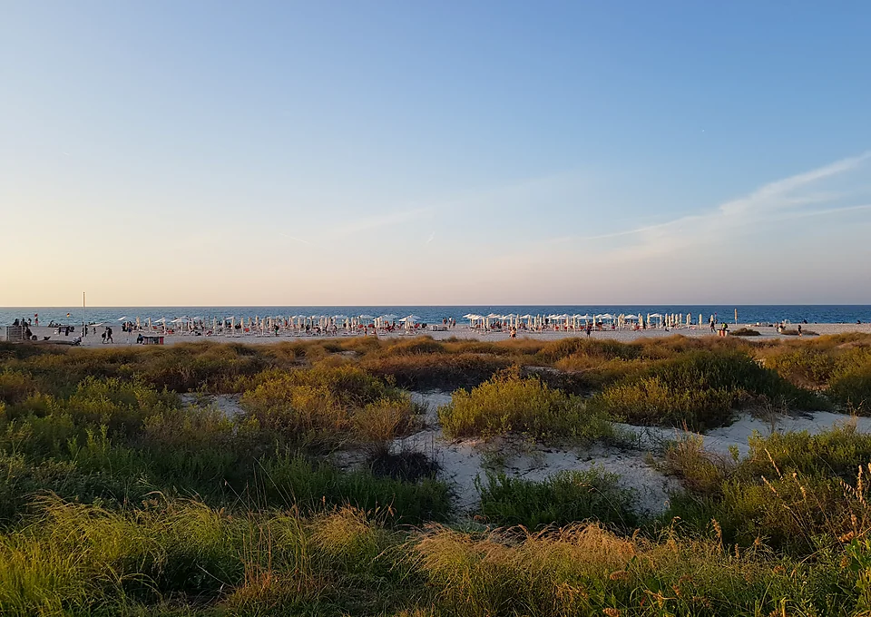
Побережье
От городских пляжей Дубая до спокойных курортов Рас-эль-Хаймы и Фуджейры — каждый эмират предлагает собственный формат отдыха у моря.
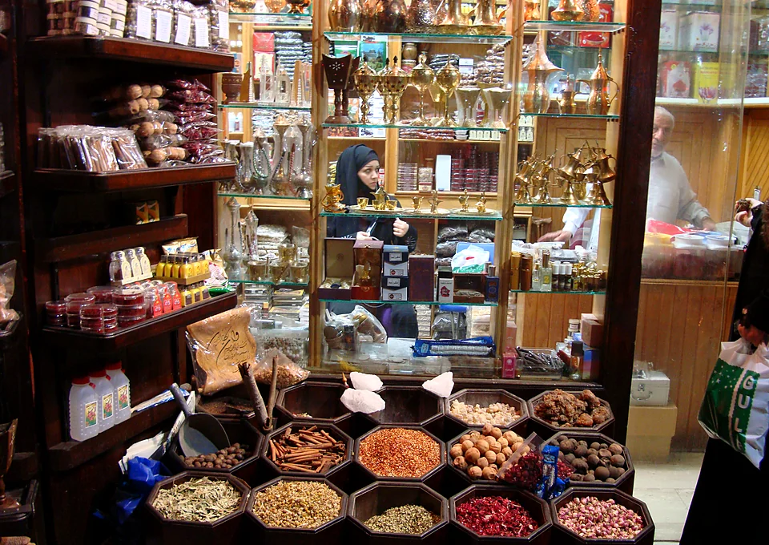
Городская жизнь
Крупные торговые центры, рестораны известных шеф-поваров и кухни разных стран делают ОАЭ удобным направлением для тех, кто хочет дополнить пляжный отдых городской программой.
ВЫБОР ОТЕЛЯ
Отели в ОАЭ заметно отличаются по расположению, формату питания, пляжам и атмосфере. Правильный выбор зависит не только от категории гостиницы, но и от того, как именно вы хотите провести отпуск.
В Дубае многие отели находятся в деловых и туристических районах без собственного пляжа. Для классического пляжного отдыха лучше выбирать курорты на Palm Jumeirah, Jumeirah Beach, Saadiyat Island, Al Marjan Island или в прибрежных районах других эмиратов.
Перед бронированием важно проверить, есть ли у отеля собственный пляж, насколько он далеко от корпуса и входит ли трансфер на пляж в стоимость проживания. У городских отелей доступ к пляжу может предоставляться отдельно.
В ОАЭ часто предлагаются завтраки, полупансион или полный пансион. Ultra All Inclusive встречается реже и в основном представлен на отдельных курортах. При выборе важно учитывать стоимость ресторанов за пределами отеля.
Расстояния между районами Дубая и другими эмиратами могут быть значительными. Перед бронированием нужно учитывать время до пляжей, торговых центров, парков развлечений, аэропорта и основных достопримечательностей.
Для семейного отдыха важны детский клуб, неглубокий вход в море, бассейны с тенью, водные горки, питание для детей и удобство перемещения по территории. Не каждый дорогой городской отель подходит семье с маленькими детьми.
Во многих отелях при заселении может потребоваться возвратный депозит. Дополнительно в отдельных эмиратах взимается туристический сбор, размер которого зависит от категории отеля и продолжительности проживания.
ПОИСК ТУРА
Выберите страну, даты путешествия, количество туристов и другие параметры. Система подберёт подходящие варианты отдыха, которые можно сразу изучить и сравнить.